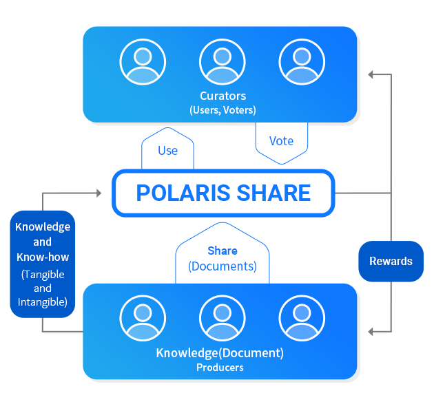
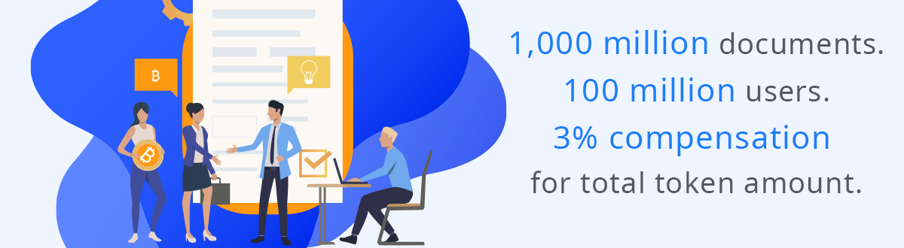
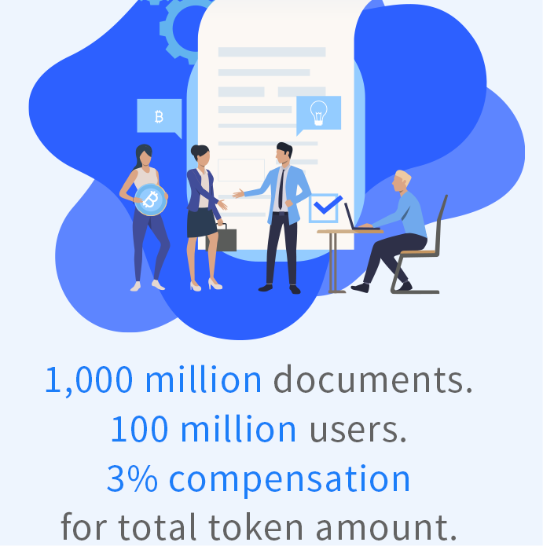

Issue
The unutilized knowledge causes ineffectiveness and results in unnecessary surplus
work
Huge numbers of documents containing important information are left unused in clouds or on hard
drives. Many knowledge producers are unnecessarily repeating work on the same subject because they
cannot find the appropriate knowledge or access such knowledge.
Knowledge producers are losing the opportunities to gain more profits from sharing and selling their
knowledge.

Vision
Distributed Incentive Specialized Knowledge Trading System
POLARIS SHARE returns the value of knowledge, which documents, and networks have, to knowledge
producers and other users.
Knowledge producers earn rewards by sharing or selling documents on the POLARIS SHARE with free of
charge or low trading fees.
Contents are curated by voters who have tokens, not by centralized companies.
The users have benefits from more diverse and quality contents shared by knowledge producers.


Strategy
Quickly attracting users and documents • Organizing accessible contents
Attracting Users: We have a plan to make 100 million users of the Polaris Office who have about 1
billion documents as priming water for boosting up at the initial stage. In order to attract these
active users and their documents to the knowledge ecosystem, we will pay 3% of the total token
amount(to be issued) for them as compensation.
Inviting documents: In the early stages of the system, users earn rewards from token inflation,
which it halves every year. As the system grows by attracting more users and contents, the unit
price of tokens will rise further, and users will also be rewarded from related advertisements. (the
Slideshare is currently ranked by Alexa as the world's 159th largest site with traffic volume)
Organizing contents: To identify better documents is the key element for success in a situation
where more and more documents are shared. The curator uses tokens to vote for documents for four
weeks and considers documents with more votes as better documents. During the four-week voting
period, curators earn greater rewards if the documents they voted for are popular with more traffic
and sales. It gives curators the motivation to find better documents.